Добро пожаловать во вторую часть руководства по нейронным сетям.
Сразу хочу принести извинения всем кто ждал вторую часть намного раньше. По определенным причинам мне пришлось отложить ее написание. На самом деле я не ожидал, что у первой статьи будет такой спрос и что так много людей заинтересует данная тема. Взяв во внимание ваши комментарии, я постараюсь предоставить вам как можно больше информации и в то же время сохранить максимально понятный способ ее изложения.
В данной статье, я буду рассказывать о способах обучения/тренировки нейросетей (в частности метод обратного распространения) и если вы, по каким-либо причинам, еще не прочитали первую часть, настоятельно рекомендую начать с нее. В процессе написания этой статьи, я хотел также рассказать о других видах нейросетей и методах тренировки, однако, начав писать про них, я понял что это пойдет вразрез с моим методом изложения. Я понимаю, что вам не терпится получить как можно больше информации, однако эти темы очень обширны и требуют детального анализа, а моей основной задачей является не написать очередную статью с поверхностным объяснением, а донести до вас каждый аспект затронутой темы и сделать статью максимально легкой в освоении. Спешу расстроить любителей “покодить”, так как я все еще не буду прибегать к использованию языка программирования и буду объяснять все “на пальцах”. Достаточно вступления, давайте теперь продолжим изучение нейросетей.
Что такое нейрон смещения?
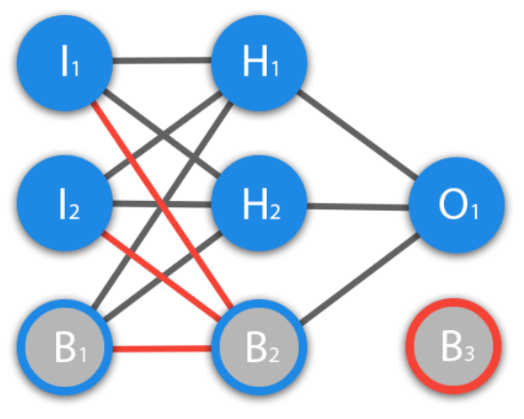
Перед тем как начать нашу основную тему, мы должны ввести понятие еще одного вида нейронов — нейрон смещения. Нейрон смещения или bias-нейрон — это третий вид нейронов, используемый в большинстве нейросетей. Особенность этого типа нейронов заключается в том, что его вход и выход всегда равняются 1 и они никогда не имеют входных синапсов. Нейроны смещения могут, либо присутствовать в нейронной сети по одному на слое, либо полностью отсутствовать, 50/50 быть не может (красным на схеме обозначены веса и нейроны которые размещать нельзя). Соединения у нейронов смещения такие же, как у обычных нейронов — со всеми нейронами следующего уровня, за исключением того, что синапсов между двумя bias нейронами быть не может. Следовательно, их можно размещать на входном слое и всех скрытых слоях, но никак не на выходном слое, так как им попросту не с чем будет формировать связь.
Для чего нужен нейрон смещения?
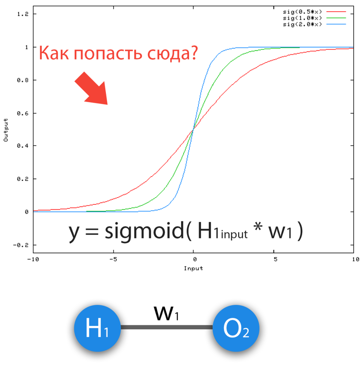
Состояние 1
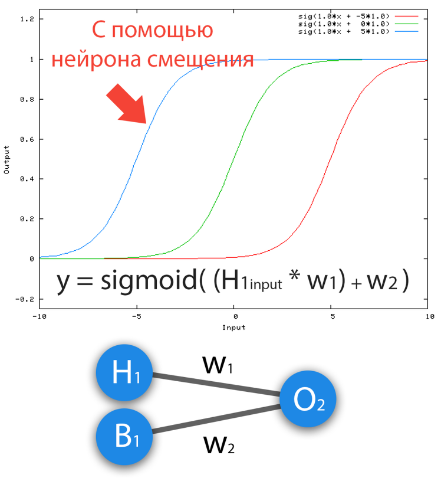
Состояние 2
Нейрон смещения нужен для того, чтобы иметь возможность получать выходной результат, путем сдвига графика функции активации вправо или влево. Если это звучит запутанно, давайте рассмотрим простой пример, где есть один входной нейрон и один выходной нейрон. Тогда можно установить, что выход O2 будет равен входу H1, умноженному на его вес, и пропущенному через функцию активации (формула на фото слева). В нашем конкретном случае, будем использовать сигмоид.
Из школьного курса математики, мы знаем, что если взять функцию y = ax+b и менять у нее значения “а”, то будет изменяться наклон функции (цвета линий на графике слева), а если менять “b”, то мы будем смещать функцию вправо или влево (цвета линий на графике справа). Так вот “а” — это вес H1, а “b” — это вес нейрона смещения B1. Это грубый пример, но примерно так все и работает (если вы посмотрите на функцию активации справа на изображении, то заметите очень сильное сходство между формулами). То есть, когда в ходе обучения, мы регулируем веса скрытых и выходных нейронов, мы меняем наклон функции активации. Однако, регулирование веса нейронов смещения может дать нам возможность сдвинуть функцию активации по оси X и захватить новые участки. Иными словами, если точка, отвечающая за ваше решение, будет находиться, как показано на графике слева, то ваша НС никогда не сможет решить задачу без использования нейронов смещения. Поэтому, вы редко встретите нейронные сети без нейронов смещения.
Также нейроны смещения помогают в том случае, когда все входные нейроны получают на вход 0 и независимо от того какие у них веса, они все передадут на следующий слой 0, но не в случае присутствия нейрона смещения. Наличие или отсутствие нейронов смещения — это гиперпараметр (об этом чуть позже). Одним словом, вы сами должны решить, нужно ли вам использовать нейроны смещения или нет, прогнав НС с нейронами смешения и без них и сравнив результаты.
ВАЖНО знать, что иногда на схемах не обозначают нейроны смещения, а просто учитывают их веса при вычислении входного значения например:
input = H1*w1+H2*w2+b3
b3 = bias*w3
Так как его выход всегда равен 1, то можно просто представить что у нас есть дополнительный синапс с весом и прибавить к сумме этот вес без упоминания самого нейрона.
Как сделать чтобы НС давала правильные ответы?
Ответ прост — нужно ее обучать. Однако, насколько бы прост не был ответ, его реализация в плане простоты, оставляет желать лучшего. Существует несколько методов обучения НС и я выделю 3, на мой взгляд, самых интересных:
Об Rprop и ГА речь пойдет в других статьях, а сейчас мы с вами посмотрим на основу основ — метод обратного распространения, который использует алгоритм градиентного спуска.
Что такое градиентный спуск?
Это способ нахождения локального минимума или максимума функции с помощью движения вдоль градиента. Если вы поймете суть градиентного спуска, то у вас не должно возникнуть никаких вопросов во время использования метода обратного распространения. Для начала, давайте разберемся, что такое градиент и где он присутствует в нашей НС. Давайте построим график, где по оси х будут значения веса нейрона(w) а по оси у — ошибка соответствующая этому весу(e).
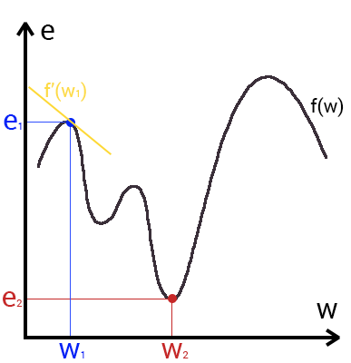
Посмотрев на этот график, мы поймем, что график функция f(w) является зависимостью ошибки от выбранного веса. На этом графике нас интересует глобальный минимум — точка (w2,e2) или, иными словами, то место где график подходит ближе всего к оси х. Эта точка будет означать, что выбрав вес w2 мы получим самую маленькую ошибку — e2 и как следствие, самый лучший результат из всех возможных. Найти же эту точку нам поможет метод градиентного спуска (желтым на графике обозначен градиент). Соответственно у каждого веса в нейросети будет свой график и градиент и у каждого надо найти глобальный минимум.
Так что же такое, этот градиент? Градиент — это вектор который определяет крутизну склона и указывает его направление относительно какой либо из точек на поверхности или графике. Чтобы найти градиент нужно взять производную от графика по данной точке (как это и показано на графике). Двигаясь по направлению этого градиента мы будем плавно скатываться в низину. Теперь представим что ошибка — это лыжник, а график функции — гора. Соответственно, если ошибка равна 100%, то лыжник находиться на самой вершине горы и если ошибка 0% то в низине. Как все лыжники, ошибка стремится как можно быстрее спуститься вниз и уменьшить свое значение. В конечном случае у нас должен получиться следующий результат:
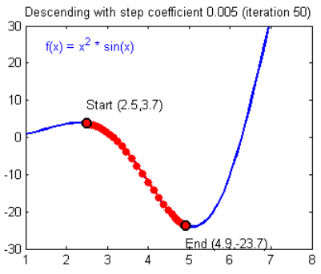
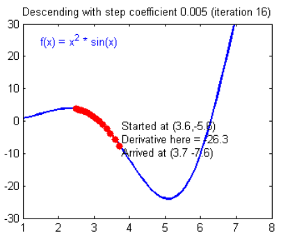
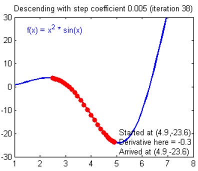
Представьте что лыжника забрасывают, с помощью вертолета, на гору. На сколько высоко или низко зависит от случая (аналогично тому, как в нейронной сети при инициализации веса расставляются в случайном порядке). Допустим ошибка равна 90% и это наша точка отсчета. Теперь лыжнику нужно спуститься вниз, с помощью градиента. На пути вниз, в каждой точке мы будем вычислять градиент, что будет показывать нам направление спуска и при изменении наклона, корректировать его. Если склон будет прямым, то после n-ого количества таких действий мы доберемся до низины. Но в большинстве случаев склон (график функции) будет волнистый и наш лыжник столкнется с очень серьезной проблемой — локальный минимум. Я думаю все знают, что такое локальный и глобальный минимум функции, для освежения памяти вот пример. Попадание в локальный минимум чревато тем, что наш лыжник навсегда останется в этой низине и никогда не скатиться с горы, следовательно мы никогда не сможем получить правильный ответ. Но мы можем избежать этого, снарядив нашего лыжника реактивным ранцем под названием момент (momentum). Вот краткая иллюстрация момента:
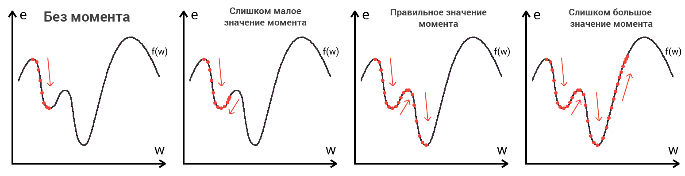
Как вы уже наверное догадались, этот ранец придаст лыжнику необходимое ускорение чтобы преодолеть холм, удерживающий нас в локальном минимуме, однако здесь есть одно НО. Представим что мы установили определенное значение параметру момент и без труда смогли преодолеть все локальные минимумы, и добраться до глобального минимума. Так как мы не можем просто отключить реактивный ранец, то мы можем проскочить глобальный минимум, если рядом с ним есть еще низины. В конечном случае это не так важно, так как рано или поздно мы все равно вернемся обратно в глобальный минимум, но стоит помнить, что чем больше момент, тем больше будет размах с которым лыжник будет кататься по низинам. Вместе с моментом в методе обратного распространения также используется такой параметр как скорость обучения (learning rate). Как наверняка многие подумают, чем больше скорость обучения, тем быстрее мы обучим нейросеть. Нет. Скорость обучения, также как и момент, является гиперпараметром — величина которая подбирается путем проб и ошибок. Скорость обучения можно напрямую связать со скоростью лыжника и можно с уверенностью сказать — тише едешь дальше будешь. Однако здесь тоже есть определенные аспекты, так как если мы совсем не дадим лыжнику скорости то он вообще никуда не поедет, а если дадим маленькую скорость то время пути может растянуться на очень и очень большой период времени. Что же тогда произойдет если мы дадим слишком большую скорость?
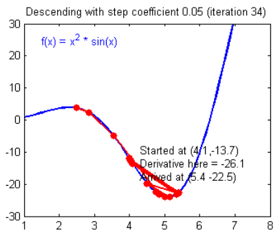
Как видите, ничего хорошего. Лыжник начнет скатываться по неправильному пути и возможно даже в другом направлении, что как вы понимаете только отдалит нас от нахождения правильного ответа. Поэтому во всех этих параметрах нужно находить золотую середину чтобы избежать не сходимости НС (об этом чуть позже).
Что такое Метод Обратного Распространения (МОР)?
Вот мы и дошли до того момента, когда мы можем обсудить, как же все таки сделать так, чтобы ваша НС могла правильно обучаться и давать верные решения. Очень хорошо МОР визуализирован на этой картинке:
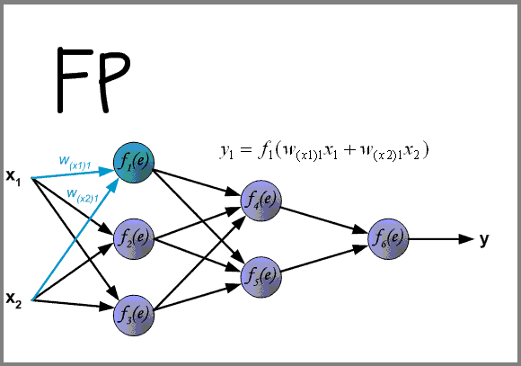
См. анимацию в прикрепленном файле.
А теперь давайте подробно разберем каждый этап. Если вы помните то в предыдущей статье мы считали выход НС. По другому это называется передача вперед (Forward pass), то есть мы последовательно передаем информацию от входных нейронов к выходным. После чего мы вычисляем ошибку и основываясь на ней делаем обратную передачу, которая заключается в том, чтобы последовательно менять веса нейронной сети, начиная с весов выходного нейрона. Значение весов будут меняться в ту сторону, которая даст нам наилучший результат. В моих вычисления я буду пользоваться методом нахождения дельты, так как это наиболее простой и понятный способ. Также я буду использовать стохастический метод обновления весов (об этом чуть позже).
Теперь давайте продолжим с того места, где мы закончили вычисления в предыдущей статье.
Данные задачи из предыдущей статьи
Данные: I1=1, I2=0, w1=0.45, w2=0.78 ,w3=-0.12 ,w4=0.13 ,w5=1.5 ,w6=-2.3.
H1input = 1*0.45+0*-0.12=0.45
H1output = sigmoid(0.45)=0.61
H2input = 1*0.78+0*0.13=0.78
H2output = sigmoid(0.78)=0.69
O1input = 0.61*1.5+0.69*-2.3=-0.672
O1output = sigmoid(-0.672)=0.33
O1ideal = 1 (0xor1=1)
Error = ((1-0.33)^2)/1=0.45
Результат — 0.33, ошибка — 45%.
Так как мы уже подсчитали результат НС и ее ошибку, то мы можем сразу приступить к МОРу. Как я уже упоминал ранее, алгоритм всегда начинается с выходного нейрона. В таком случае давайте посчитаем для него значение δ (дельта) по формуле 1.
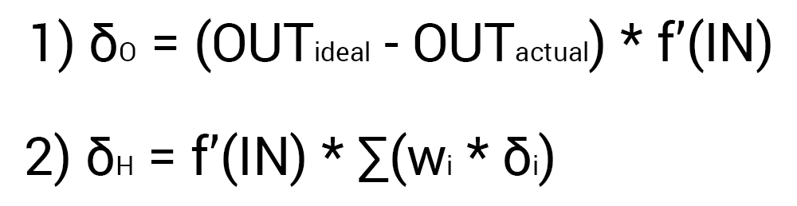
Так как у выходного нейрона нет исходящих синапсов, то мы будем пользоваться первой формулой (δ output), следственно для скрытых нейронов мы уже будем брать вторую формулу (δ hidden). Тут все достаточно просто: считаем разницу между желаемым и полученным результатом и умножаем на производную функции активации от входного значения данного нейрона. Прежде чем приступить к вычислениям я хочу обратить ваше внимание на производную. Во первых как это уже наверное стало понятно, с МОР нужно использовать только те функции активации, которые могут быть дифференцированы. Во вторых чтобы не делать лишних вычислений, формулу производной можно заменить на более дружелюбную и простую формула вида:
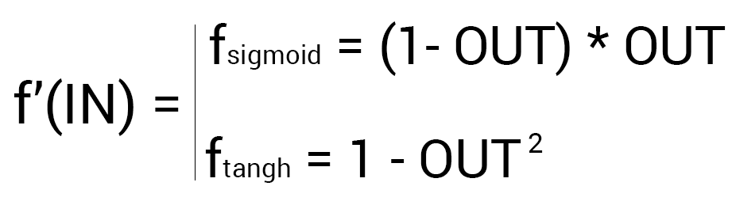
Таким образом наши вычисления для точки O1 будут выглядеть следующим образом:
O1output = 0.33
O1ideal = 1
Error = 0.45
δO1 = (1 — 0.33) * ( (1 — 0.33) * 0.33 ) = 0.148
На этом вычисления для нейрона O1 закончены. Запомните, что после подсчета дельты нейрона мы обязаны сразу обновить веса всех исходящих синапсов этого нейрона. Так как в случае с O1 их нет, мы переходим к нейронам скрытого уровня и делаем тоже самое за исключение того, что формула подсчета дельты у нас теперь вторая и ее суть заключается в том, чтобы умножить производную функции активации от входного значения на сумму произведений всех исходящих весов и дельты нейрона с которой этот синапс связан. Но почему формулы разные? Дело в том что вся суть МОР заключается в том чтобы распространить ошибку выходных нейронов на все веса НС. Ошибку можно вычислить только на выходном уровне, как мы это уже сделали, также мы вычислили дельту в которой уже есть эта ошибка. Следственно теперь мы будем вместо ошибки использовать дельту которая будет передаваться от нейрона к нейрону. В таком случае давайте найдем дельту для H1:
H1output = 0.61
w5 = 1.5
δO1 = 0.148
δH1 = ( (1 — 0.61) * 0.61 ) * ( 1.5 * 0.148 ) = 0.053
Теперь нам нужно найти градиент для каждого исходящего синапса. Здесь обычно вставляют 3 этажную дробь с кучей производных и прочим математическим адом, но в этом и вся прелесть использования метода подсчета дельт, потому что в конечном счете ваша формула нахождения градиента будет выглядеть вот так:
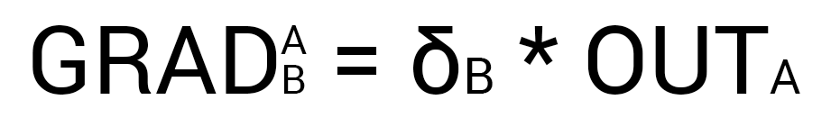
Здесь точка A это точка в начале синапса, а точка B на конце синапса. Таким образом мы можем подсчитать градиент w5 следующим образом:
H1output = 0.61
δO1 = 0.148
GRADw5 = 0.61 * 0.148 = 0.09
Сейчас у нас есть все необходимые данные чтобы обновить вес w5 и мы сделаем это благодаря функции МОР которая рассчитывает величину на которую нужно изменить тот или иной вес и выглядит она следующим образом:
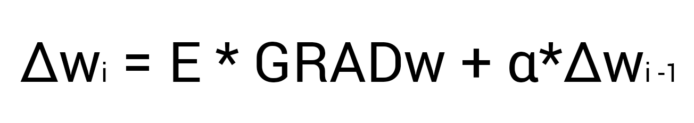
Настоятельно рекомендую вам не игнорировать вторую часть выражения и использовать момент так как это вам позволит избежать проблем с локальным минимумом.
Здесь мы видим 2 константы о которых мы уже говорили, когда рассматривали алгоритм градиентного спуска: E (эпсилон) — скорость обучения, α (альфа) — момент. Переводя формулу в слова получим: изменение веса синапса равно коэффициенту скорости обучения, умноженному на градиент этого веса, прибавить момент умноженный на предыдущее изменение этого веса (на 1-ой итерации равно 0). В таком случае давайте посчитаем изменение веса w5 и обновим его значение прибавив к нему Δw5:
E = 0.7
Α = 0.3
w5 = 1.5
GRADw5 = 0.09
Δw5(i-1) = 0
Δw5 = 0.7 * 0.09 + 0 * 0.3 = 0.063
w5 = w5 + Δw5 = 1.563
Таким образом после применения алгоритма наш вес увеличился на 0.063. Теперь предлагаю сделать вам тоже самое для H2.
H2output = 0.69
w6 = -2.3
δO1 = 0.148
E = 0.7
Α = 0.3
Δw6(i-1) = 0
δH2 = ( (1 — 0.69) * 0.69 ) * ( -2.3 * 0.148 ) = -0.07
GRADw6 = 0.69 * 0.148 = 0.1
Δw6 = 0.7 * 0.1 + 0 * 0.3 = 0.07
w6 = w6 + Δw6 = -2.2
И конечно не забываем про I1 и I2, ведь у них тоже есть синапсы веса которых нам тоже нужно обновить. Однако помним, что нам не нужно находить дельты для входных нейронов так как у них нет входных синапсов.
w1 = 0.45, Δw1(i-1) = 0
w2 = 0.78, Δw2(i-1) = 0
w3 = -0.12, Δw3(i-1) = 0
w4 = 0.13, Δw4(i-1) = 0
δH1 = 0.053
δH2 = -0.07
E = 0.7
Α = 0.3
GRADw1 = 1 * 0.053 = 0.053
GRADw2 = 1 * -0.07 = -0.07
GRADw3 = 0 * 0.053 = 0
GRADw4 = 0 * -0.07 = 0
Δw1 = 0.7 * 0.053 + 0 * 0.3 = 0.04
Δw2 = 0.7 * -0.07 + 0 * 0.3 = -0.05
Δw3 = 0.7 * 0 + 0 * 0.3 = 0
Δw4 = 0.7 * 0 + 0 * 0.3 = 0
w1 = w1 + Δw1 = 0.5
w2 = w2 + Δw2 = 0.73
w3 = w3 + Δw3 = -0.12
w4 = w4 + Δw4 = 0.13
Теперь давайте убедимся в том, что мы все сделали правильно и снова посчитаем выход НС только уже с обновленными весами.
I1 = 1
I2 = 0
w1 = 0.5
w2 = 0.73
w3 = -0.12
w4 = 0.13
w5 = 1.563
w6 = -2.2
H1input = 1 * 0.5 + 0 * -0.12 = 0.5
H1output = sigmoid(0.5) = 0.62
H2input = 1 * 0.73 + 0 * 0.124 = 0.73
H2output = sigmoid(0.73) = 0.675
O1input = 0.62* 1.563 + 0.675 * -2.2 = -0.51
O1output = sigmoid(-0.51) = 0.37
O1ideal = 1 (0xor1=1)
Error = ((1-0.37)^2)/1=0.39
Результат — 0.37, ошибка — 39%.
Как мы видим после одной итерации МОР, нам удалось уменьшить ошибку на 0.04 (6%). Теперь нужно повторять это снова и снова, пока ваша ошибка не станет достаточно мала.
Что еще нужно знать о процессе обучения?
Нейросеть можно обучать с учителем и без (supervised, unsupervised learning).
Обучение с учителем — это тип тренировок присущий таким проблемам как регрессия и классификация (им мы и воспользовались в примере приведенном выше). Иными словами здесь вы выступаете в роли учителя а НС в роли ученика. Вы предоставляете входные данные и желаемый результат, то есть ученик посмотрев на входные данные поймет, что нужно стремиться к тому результату который вы ему предоставили.
Обучение без учителя — этот тип обучения встречается не так часто. Здесь нет учителя, поэтому сеть не получает желаемый результат или же их количество очень мало. В основном такой вид тренировок присущ НС у которых задача состоит в группировке данных по определенным параметрам. Допустим вы подаете на вход 10000 статей на хабре и после анализа всех этих статей НС сможет распределить их по категориям основываясь, например, на часто встречающихся словах. Статьи в которых упоминаются языки программирования, к программированию, а где такие слова как Photoshop, к дизайну.
Существует еще такой интересный метод, как обучение с подкреплением (reinforcement learning). Этот метод заслуживает отдельной статьи, но я попытаюсь вкратце описать его суть. Такой способ применим тогда, когда мы можем основываясь на результатах полученных от НС, дать ей оценку. Например мы хотим научить НС играть в PAC-MAN, тогда каждый раз когда НС будет набирать много очков мы будем ее поощрять. Иными словами мы предоставляем НС право найти любой способ достижения цели, до тех пор пока он будет давать хороший результат. Таким способом, сеть начнет понимать чего от нее хотят добиться и пытается найти наилучший способ достижения этой цели без постоянного предоставления данных “учителем”.
Также обучение можно производить тремя методами: стохастический метод (stochastic), пакетный метод (batch) и мини-пакетный метод (mini-batch). Существует очень много статей и исследований на тему того, какой из методов лучше и никто не может прийти к общему ответу. Я же сторонник стохастического метода, однако я не отрицаю тот факт, что каждый метод имеет свои плюсы и минусы.
Вкратце о каждом методе:
Стохастический (его еще иногда называют онлайн) метод работает по следующему принципу — нашел Δw, сразу обнови соответствующий вес.
Пакетный метод же работает по другому. Мы суммируем Δw всех весов на текущей итерации и только потом обновляем все веса используя эту сумму. Один из самых важных плюсов такого подхода — это значительная экономия времени на вычисление, точность же в таком случае может сильно пострадать.
Мини-пакетный метод является золотой серединой и пытается совместить в себе плюсы обоих методов. Здесь принцип таков: мы в свободном порядке распределяем веса по группам и меняем их веса на сумму Δw всех весов в той или иной группе.
Что такое гиперпараметры?
Гиперпараметры — это значения, которые нужно подбирать вручную и зачастую методом проб и ошибок. Среди таких значений можно выделить:
В других типах НС присутствуют дополнительные гиперпараметры, но о них мы говорить не будем. Подбор верных гиперпараметров очень важен и будет напрямую влиять на сходимость вашей НС. Понять стоит ли использовать нейроны смещения или нет достаточно просто. Количество скрытых слоев и нейронов в них можно вычислить перебором основываясь на одном простом правиле — чем больше нейронов, тем точнее результат и тем экспоненциально больше время, которое вы потратите на ее обучение. Однако стоит помнить, что не стоит делать НС с 1000 нейронов для решения простых задач. А вот с выбором момента и скорости обучения все чуточку сложнее. Эти гиперпараметры будут варьироваться, в зависимости от поставленной задачи и архитектуры НС. Например, для решения XOR скорость обучения может быть в пределах 0.3 — 0.7, но в НС которая анализирует и предсказывает цену акций, скорость обучения выше 0.00001 приводит к плохой сходимости НС. Не стоит сейчас заострять свое внимание на гиперпараметрах и пытаться досконально понять, как же их выбирать. Это придет с опытом, а пока что советую просто экспериментировать и искать примеры решения той или иной задачи в сети.
Что такое сходимость?
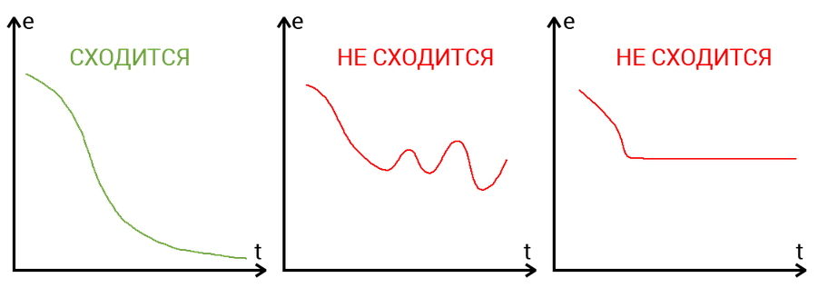
Сходимость говорит о том, правильная ли архитектура НС и правильно ли были подобраны гиперпараметры в соответствии с поставленной задачей. Допустим наша программа выводит ошибку НС на каждой итерации в лог. Если с каждой итерацией ошибка будет уменьшаться, то мы на верном пути и наша НС сходится. Если же ошибка будет прыгать вверх — вниз или застынет на определенном уровне, то НС не сходится. В 99% случаев это решается изменением гиперпараметров. Оставшийся 1% будет означать, что у вас ошибка в архитектуре НС. Также бывает, что на сходимость влияет переобучение НС.
Что такое переобучение?
Переобучение, как следует из названия, это состояние нейросети, когда она перенасыщена данными. Это проблема возникает, если слишком долго обучать сеть на одних и тех же данных. Иными словами, сеть начнет не учиться на данных, а запоминать и “зубрить” их. Соответственно, когда вы уже будете подавать на вход этой НС новые данные, то в полученных данных может появиться шум, который будет влиять на точность результата. Например, если мы будем показывать НС разные фотографии яблок (только красные) и говорить что это яблоко. Тогда, когда НС увидит желтое или зеленое яблоко, оно не сможет определить, что это яблоко, так как она запомнила, что все яблоки должны быть красными. И наоборот, когда НС увидит что-то красное и по форме совпадающее с яблоком, например персик, она скажет, что это яблоко. Это и есть шум. На графике шум будет выглядеть следующим образом.
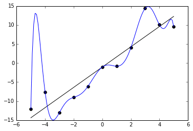
Видно, что график функции сильно колеблется от точки к точке, которые являются выходными данными (результатом) нашей НС. В идеале, этот график должен быть менее волнистый и прямой. Чтобы избежать переобучения, не стоит долго тренировать НС на одних и тех же или очень похожих данных. Также, переобучение может быть вызвано большим количеством параметров, которые вы подаете на вход НС или слишком сложной архитектурой. Таким образом, когда вы замечаете ошибки (шум) в выходных данных после этапа обучения, то вам стоит использовать один из методов регуляризации, но в большинстве случаев это не понадобиться.
Заключение
Надеюсь эта статья смогла прояснить ключевые моменты такого нелегко предмета, как Нейронные сети. Однако я считаю, что сколько бы ты статей не прочел, без практики такую сложную тему освоить невозможно. Поэтому, если вы только в начале пути и хотите изучить эту перспективную и развивающуюся отрасль, то советую начать практиковаться с написания своей НС, а уже после прибегать к помощи различных фреймворков и библиотек.